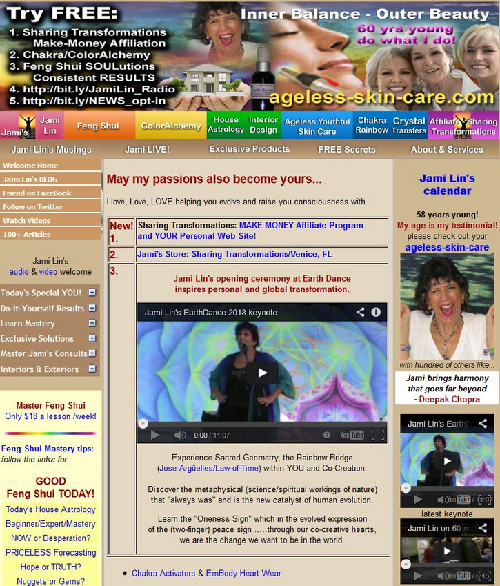

My father is the owner of a branded cosmetics and perfume company. He sells cosmetics and perfume to both retailers and individual customers. This company already has a website mizspa.com, but he is not satisfied with his website. The problem is that his website seems untrustworthy and somewhat cheap, despite the legitimacy and price of the products. His website's FAQ are full of questions asking whether the website is real or a counterfeit.
This website sells branded skin care products,cosmetics and perfumes online.They have a wholesale business in Lai Chi Kok and Tsim Sha Tsui.Our aim is to design a new website and fix the problems that the client is currently facing.
The audience for the website will mainly be Hong Kong females from the age of eighteen to fifty. It could be the ones who can afford branded products and can also be for those who cannot afford branded products.
I have mentioned this quite a few times before as well. We want our website to give the look and feel of trustworthy to our audience. We want to make our audince believe that they can trust the website and the products that the company is selling. Some websites on the internet may not be able to give a look that will convince the audince to buy their products or even try looking at the whole website. The homepage is always the first impression to the website, that's we kept the hompepage simple and neat so that the audince want to carry on looking through other pages.
The “look” is defined by the following components of your website:
The “feel” is determined by these characteristics:
Here are some of he bad exaples of websites that i looked at and though they weren't the ones:

This isn't really cosmetics and perfumes but gives the basic idea of what it may look like.
The purpose of the website is to show the products that the company is selling, the contact information, the fact that the company has a free gift wrapping service and it is visually more traditional from their current website "MizSpa.com",yet classy and professional-looking.The current website mainly targets people around China and Hong Kong,therefore, we've been requested to make this website to look "local" and "Chinese," so that it mainly attracts the customers in Hong Kong and China. The client also thinks that this might increase the sales throughout the year.
The client is Jacky Altaf, the one who owns the business and the Manipreet Chaudry who is handling the computer section. I think it will solve the company's problem because they are in need of a website to target local customers and have more customers visit their website and buy their products. Mr. Manpreet expalined to us that there isn't much traffic to the website and maybe, by creating a seprate website for local people may increase the number of sales online.
1. To email the client
2. Create flowcharts
3. Create a wirefarame for the website
4. Make the homepage on dreamveaver
5. Have slideshow
6. Have a log-in box
7. Have 2 languages -English and Chinese
8. Give a trust worthy look-Using good colors, classsic look, proffeciency
1. Email the client
2. Have a slideshow of the famous products on the hompeage<
3. Make the hompeage
4. Create flowcharts
5. create wireframes
My group and I met the client at his office in Lai Chi Kok. He explained his main goals and what they want us to achieve through the website. We put down the main points and the eesential inofrmation that he told us was important to include in the website. Cureently we have been emailing him and keeping track of his satisfaction and dissatisfaction

We chose to use this flowchart because this fulfills the requirments of the client. It has 4 pages: "The homepaage", "Some products", "Local Benefits/About us" "locally Popualr products" and a page for "Ferarri products" (sample page of a brand page). Each of them contain most of the things that we want to display. Although we can't put in all the products (there are too many), we tried our best to put in the most famous products and the ones that they especially want to sell.
ss